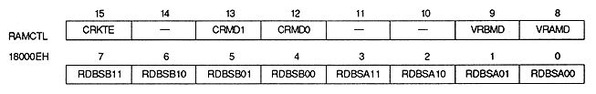

| Rotation parameter Data Mode | Rotation Parameter | Most significant bit function | Most significant bit value | Image processing |
| 0 | A | Transparent | 0 | Display the image obtained using the coefficient data |
| 1 | Forcibly make dots using the coefficient data transparent Bright dots | |||
| B | Do not use | - | - | |
| 1 | A | Do not use | - | - |
| B | Transparent | 0 | Using the coefficient data Display the resulting image | |
| 1 | Forcibly make dots using the coefficient data transparent Bright dots | |||
| 2 | A | Parameter Switch | 0 | Display the image obtained using the coefficient data |
| 1 | Invalidate the coefficient data and display the image obtained by the rotation parameter B | |||
| B | Transparent | 0 | Using the coefficient data Display the resulting image | |
| 1 | Forcibly make dots using the coefficient data transparent Bright dots | |||
| 3 | A, B | Transparent | 0 | Display the image obtained using the coefficient data |
| 1 | Forcibly make dots using the coefficient data transparent Bright dots |

Color RAM coefficient table enable bit : Color RAM coefficient table enable bit (CRKTE), bit 15
| CRKTE | Process |
| 0 | Store coefficient table in VRAM |
| 1 | The coefficient table is stored in color RAM |